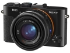

器材库 > 不可换镜头数码相机 > DSC-RX1

规格总览
发布日期
2012-09-12
厂家推荐价格
250,000.00 （日元）
影像规格
影像传感器
Exmor R CMOS
影像传感器尺寸
35.8×23.9mm
总像素
2470万
有效像素
2430万
影像处理器
BIONZ
静态图像尺寸
6000×3376，3936×2624，3936×2216，2640×1760，2640×1488
静态图像格式
JPEG, RAW, RAW+JPEG
画幅比
3:2, 4:3, 16:9, 1:1
短片尺寸
AVCHD：28M PS（1920×1080，60p/50p），24M FX（1920×1080，60i/50i），17M FH（1920×1080，60i/50i），24M FX（1920×1080，24p/25p），17M FH（1920×1080，24p/25p）
短片格式
MPEG4-AVC/H.264
短片音效
立体声
防抖系统
光学防抖（摄影模式），动态光学防抖（视频模式）
镜头和对焦
镜头结构
8片/7组
非球面镜片
3(含AA镜片)片
焦距
35mm
最大光圈
f/2.0
光学变焦
1倍
数码变焦
14倍
最近对焦距离
25cm
对焦模式
对比度检测自动对焦（传感器）\多区域对焦\中央对焦\选择单点对焦\跟踪对焦\单点检测\连续对焦\人脸检测
AF辅助灯
有
手动对焦
支持
曝光控制
测光模式
中央重点测光, 多分区评价测光, 点测光
曝光模式
P（程序自动曝光）, 场景选择, A（光圈优先自动曝光）, S（快门速度优先自动曝光）, M（手动测光曝光）, 全景扫描, 视频
场景模式
人像\风景\运动\夕阳\夜景人像\夜景\手持夜景
快门速度
30-1/2000
曝光补偿
±3EV以1/3EV级调整
ISO感光度
100, 200, 400, 800, 3200, 6400, 可扩展至50-25600, 可扩展至100-102400, 可扩展至25600
白平衡
日光, 白炽灯, 闪光灯, 阴天, 荧光灯, 荧光灯H, 阴影, 自动, 荧光灯L
自拍
10秒, 2秒
连拍
2.5fps，5fps
闪光灯
内置闪光灯
弹出式
闪光模式
自动, 慢速同步, 关闭, 开启
闪光涵盖范围
6m
取景规格
LCD类型
Xtra Fine LCD
LCD尺寸
3.0英寸
LCD像素
122.9万
文件输入/输出
存储卡
MS/MS PRO记忆棒, SD/SDHC, SDXC, microSDHC, microSDXC
数据接口
USB2.0
视频/音频接口
HDMI 输出
电源
电池
锂离子NP-BX1
外观
材质
铝合金
颜色
黑色
尺寸
113.3 x 65.4 x 69.6mm
重量
482g（含电池与记忆棒）/约453（仅主机）g
dysunnyclub2014-12-25 20:265 分
操作性 5.00功能性 5.00美观性 5.00趣味性 5.00耐用性 5.00性价比 5.00解像力 5.00色彩还原 5.00
好摄swsxh2014-02-26 16:484.44 分
操作性 4.50功能性 4.50美观性 4.50趣味性 4.00耐用性 4.50性价比 3.50解像力 5.00色彩还原 5.00
rica2013-11-19 22:424.75 分
操作性 5.00功能性 5.00美观性 5.00趣味性 4.00耐用性 4.50性价比 4.50解像力 5.00色彩还原 5.00
十八刀2013-07-03 11:044.5 分
操作性 4.50功能性 4.50美观性 4.50趣味性 4.50耐用性 4.50性价比 4.50解像力 4.50色彩还原 4.50
rica2013-05-12 08:10
gemeng2013-05-08 20:114.69 分
操作性 5.00功能性 4.50美观性 4.50趣味性 4.50耐用性 4.50性价比 4.50解像力 5.00色彩还原 5.00
zhengj2013-02-22 21:094.88 分
操作性 5.00功能性 5.00美观性 5.00趣味性 5.00耐用性 5.00性价比 4.00解像力 5.00色彩还原 5.00
七彩湖畔2013-02-01 08:064.75 分
操作性 4.50功能性 5.00美观性 4.50趣味性 5.00耐用性 4.50性价比 4.50解像力 5.00色彩还原 5.00
xiagengyuan2012-12-30 09:523.44 分
操作性 4.00功能性 4.00美观性 4.00趣味性 4.00耐用性 0.50性价比 2.00解像力 4.50色彩还原 4.50
chinaahlg2012-12-02 12:084.56 分
操作性 5.00功能性 4.50美观性 5.00趣味性 5.00耐用性 4.50性价比 3.00解像力 5.00色彩还原 4.50
产品图 / 样片
评测 / 相关文章
- 详细内容 （存档）
- 掌中全画幅 索尼黑卡RX1详细评测 （存档）
- ［试用］RX1+A7/135ZA，两个定焦的行走 （存档）
- ［试用］蓝调布鲁斯——用RX1记录生活的音符 （存档）
- ［试用］扫拍城市里最后的胡同故事 （原站已下线）
- ［试用］RX1，像旁轴一样拍照 （存档）
- ［试用］大黑卡——RX1的自留地 （存档）
- ［试用］黑卡双雄：RX1和RX100M2 （存档）
- ［试用］同门切磋 索尼a99与RX1对比点评 （存档）
- ［试用］随身的拍摄利器-RX1 （存档）
- ［资讯］索尼RX100MII和RX1R手册曝光 （存档）
- ［试用］点评顶级全画幅小DC索尼RX1 （存档）
相关文章
- ［试用］RX1+A7/135ZA，两个定焦的行走 （存档）
- ［试用］蓝调布鲁斯——用RX1记录生活的音符 （存档）
- ［试用］扫拍城市里最后的胡同故事 （原站已下线）
- ［试用］RX1，像旁轴一样拍照 （存档）
- ［试用］大黑卡——RX1的自留地 （存档）
- ［试用］黑卡双雄：RX1和RX100M2 （存档）
- ［试用］同门切磋 索尼a99与RX1对比点评 （存档）
- ［试用］随身的拍摄利器-RX1 （存档）
- ［资讯］索尼RX100MII和RX1R手册曝光 （存档）
- ［试用］点评顶级全画幅小DC索尼RX1 （存档）